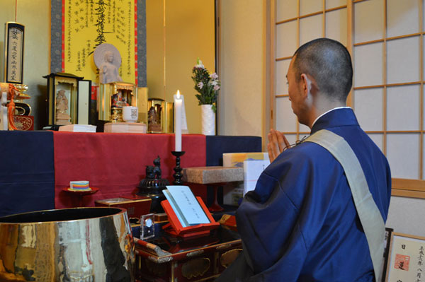

源妙寺の歩み 〜 新しいお寺の日進月歩 〜
４月１９日（日）花まつりのご案内
花まつり
四月はお釈迦さまの誕生月なので、源妙寺では地域のみなさんが仏さまと触れ合う「花まつり」を行います。
参加費は無料ですので、お気軽にお越しください。
みなさまをお待ちしております。
４月１９日（日）
【午前の部】
１１時〜 仏さまの紙芝居
１１時２０分〜 子供さんの防犯の紙芝居
１１時４０分〜 祈願（発育祈願を申し込む方のみ）
【午後の部】
１４時〜 仏さまの紙芝居
１４時２０分〜 子供さんの防犯の紙芝居
１４時４０分〜 祈願（発育祈願を申し込む方のみ）
物騒な世の中で、子供さんを心配なさる親御さんも多いことと思います。
もと警察官の大石さんを招き、子供さんに解りやすく防犯の紙芝居をしていただきます。
お釈迦さまの功徳にあやかり、子供さんの『発育円満祈願』をさせていただきますので、申し込まれる方は５００円です。ご祈祷後に、お守りをお渡し致します。
日蓮宗越谷布教所 開堂
日蓮宗越谷布教所 開堂
国内開教を行うにあたり、越谷市の数件の不動産屋を訪ね賃貸物件を探しました。
場所は埼玉県越谷市赤山町。最寄り駅は、伊勢崎線スカイツリーラインの越谷駅です。
この物件を見たとき「御本尊を祀りなさい」と言わんばかりに、リビングに３畳のスペースがありました。
住職の私はその３畳の畳のスペースに座り、お詣りの方は椅子に座っていただける作りです。
まさにバリアフリーテンプル！
開教の場所をここに決めました。
見た目は普通の一軒家でも、ご本尊をお祀りしお坊さんがそこに住めばそこはもう立派なお寺です。
信徒さまやお参りくださる方の事も考慮し、駅からなるべく近い徒歩７分の物件です。
ここで仏さまにお経が上がり、みなさまが手を合わせ功徳を積まれることを思うと、これほどのお坊さんとしての喜びはありません。不動産屋さんも一生懸命に物件を探してくださり感謝感謝です。

- 源妙寺の歩み
- 法話 〜仏教の小話〜
© 2015 日蓮宗 源妙寺 越谷布教所